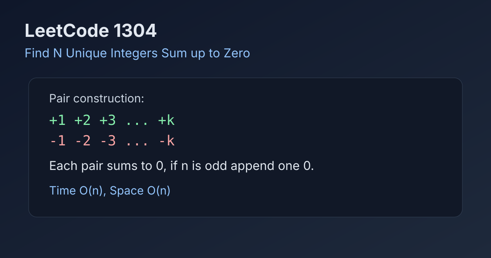

LeetCode 1304: Find N Unique Integers Sum up to Zero (Symmetric Pair Construction)
LeetCode 1304ArrayMathToday we solve LeetCode 1304 - Find N Unique Integers Sum up to Zero.
Source: https://leetcode.com/problems/find-n-unique-integers-sum-up-to-zero/

English
Problem Summary
Given an integer n, return any array containing n distinct integers whose sum is exactly zero.
Key Insight
Use symmetry: for every positive value i, include -i. Each pair contributes zero. If n is odd, append one 0.
Brute Force and Limitations
Randomly generating distinct numbers and checking sums is unnecessary and inefficient. The pair construction gives a deterministic O(n) solution directly.
Optimal Algorithm Steps
1) Initialize an empty result list.
2) For i from 1 to n/2, append i and -i.
3) If n is odd, append 0.
4) Return the list.
Complexity Analysis
Time: O(n).
Space: O(n) for output.
Common Pitfalls
- Forgetting to add 0 when n is odd.
- Accidentally reusing values and breaking uniqueness.
- Off-by-one in loop bounds.
Reference Implementations (Java / Go / C++ / Python / JavaScript)
class Solution {
public int[] sumZero(int n) {
int[] ans = new int[n];
int idx = 0;
for (int i = 1; i <= n / 2; i++) {
ans[idx++] = i;
ans[idx++] = -i;
}
if ((n & 1) == 1) ans[idx] = 0;
return ans;
}
}func sumZero(n int) []int {
ans := make([]int, 0, n)
for i := 1; i <= n/2; i++ {
ans = append(ans, i, -i)
}
if n%2 == 1 {
ans = append(ans, 0)
}
return ans
}class Solution {
public:
vector<int> sumZero(int n) {
vector<int> ans;
ans.reserve(n);
for (int i = 1; i <= n / 2; i++) {
ans.push_back(i);
ans.push_back(-i);
}
if (n % 2 == 1) ans.push_back(0);
return ans;
}
};class Solution:
def sumZero(self, n: int) -> List[int]:
ans = []
for i in range(1, n // 2 + 1):
ans.append(i)
ans.append(-i)
if n % 2 == 1:
ans.append(0)
return ansvar sumZero = function(n) {
const ans = [];
for (let i = 1; i <= Math.floor(n / 2); i++) {
ans.push(i);
ans.push(-i);
}
if (n % 2 === 1) ans.push(0);
return ans;
};中文
题目概述
给定整数 n，返回任意一个长度为 n、元素互不相同且总和为 0 的整数数组。
核心思路
利用对称性构造。每加入一个正数 i，就加入对应的 -i，这一对的和就是 0。若 n 为奇数，再补一个 0 即可。
暴力解法与不足
随机挑数并反复校验“是否重复、和是否为 0”会增加不必要复杂度。直接构造更稳定且线性时间完成。
最优算法步骤
1）初始化答案数组。
2）遍历 i = 1..n/2，每次加入 i 和 -i。
3）如果 n 为奇数，追加 0。
4）返回答案。
复杂度分析
时间复杂度：O(n)。
空间复杂度：O(n)（输出数组）。
常见陷阱
- 奇数长度时忘记补 0。
- 构造过程中出现重复数字。
- 循环边界写错导致个数不等于 n。
多语言参考实现（Java / Go / C++ / Python / JavaScript）
class Solution {
public int[] sumZero(int n) {
int[] ans = new int[n];
int idx = 0;
for (int i = 1; i <= n / 2; i++) {
ans[idx++] = i;
ans[idx++] = -i;
}
if ((n & 1) == 1) ans[idx] = 0;
return ans;
}
}func sumZero(n int) []int {
ans := make([]int, 0, n)
for i := 1; i <= n/2; i++ {
ans = append(ans, i, -i)
}
if n%2 == 1 {
ans = append(ans, 0)
}
return ans
}class Solution {
public:
vector<int> sumZero(int n) {
vector<int> ans;
ans.reserve(n);
for (int i = 1; i <= n / 2; i++) {
ans.push_back(i);
ans.push_back(-i);
}
if (n % 2 == 1) ans.push_back(0);
return ans;
}
};class Solution:
def sumZero(self, n: int) -> List[int]:
ans = []
for i in range(1, n // 2 + 1):
ans.append(i)
ans.append(-i)
if n % 2 == 1:
ans.append(0)
return ansvar sumZero = function(n) {
const ans = [];
for (let i = 1; i <= Math.floor(n / 2); i++) {
ans.push(i);
ans.push(-i);
}
if (n % 2 === 1) ans.push(0);
return ans;
};
Comments